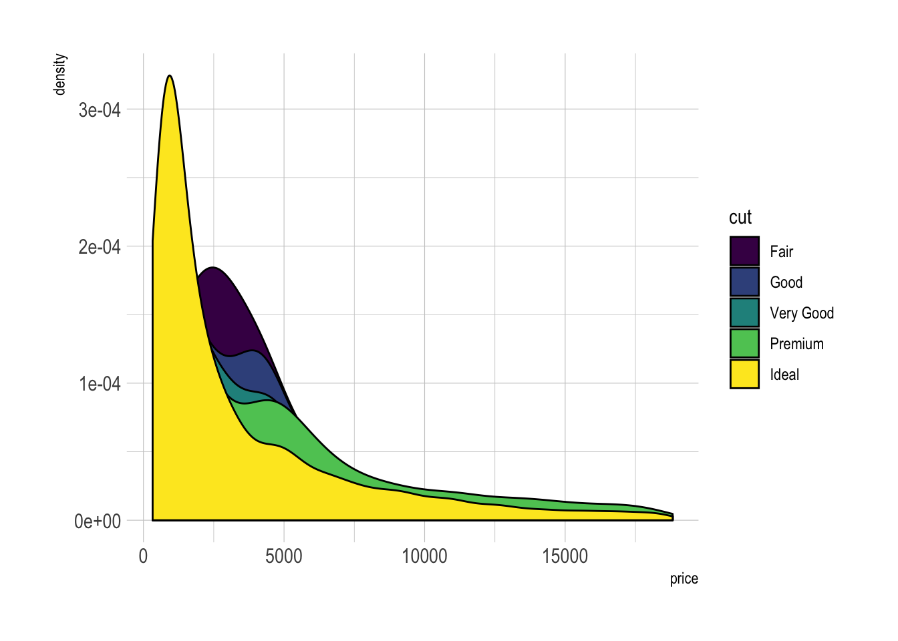
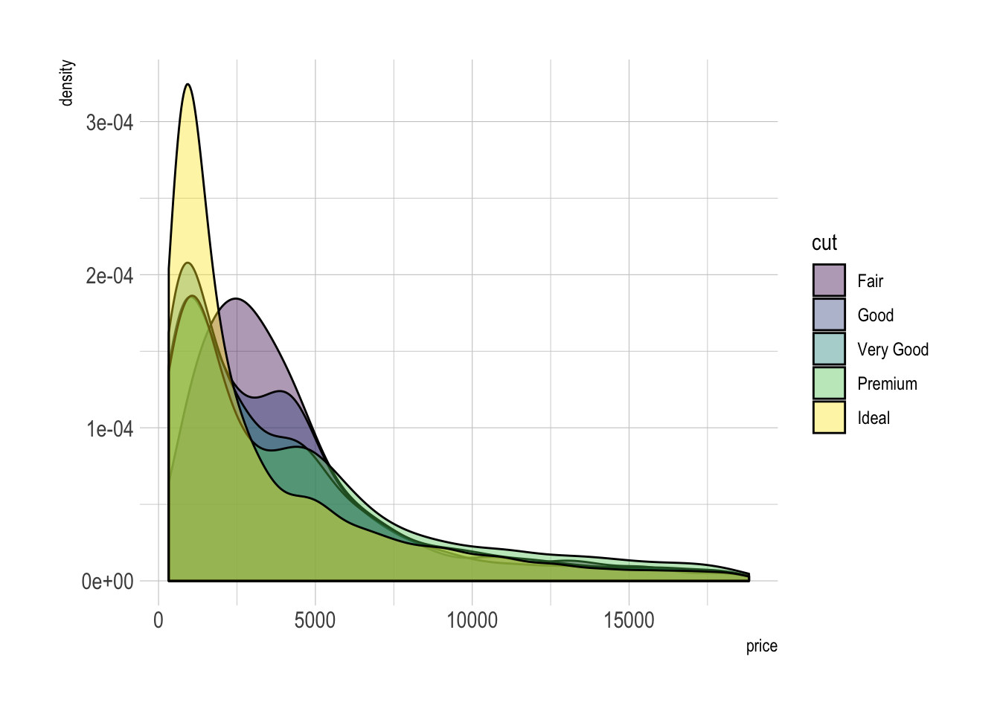
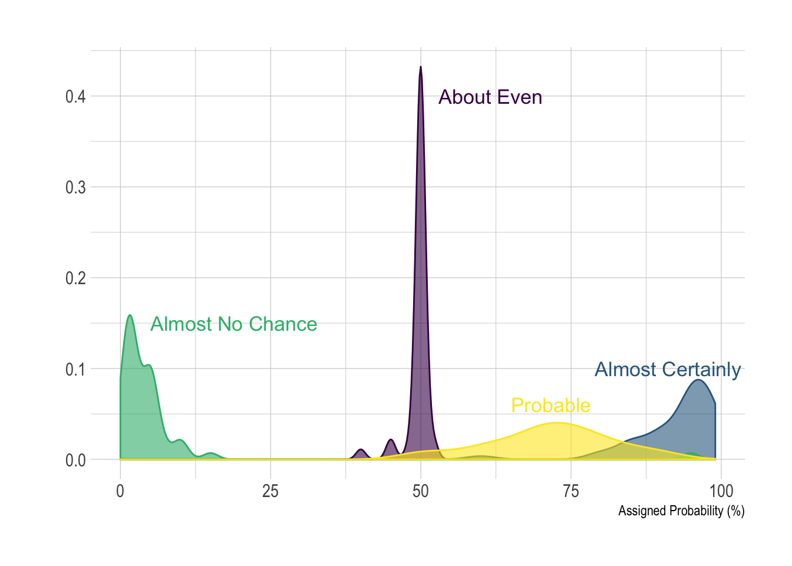
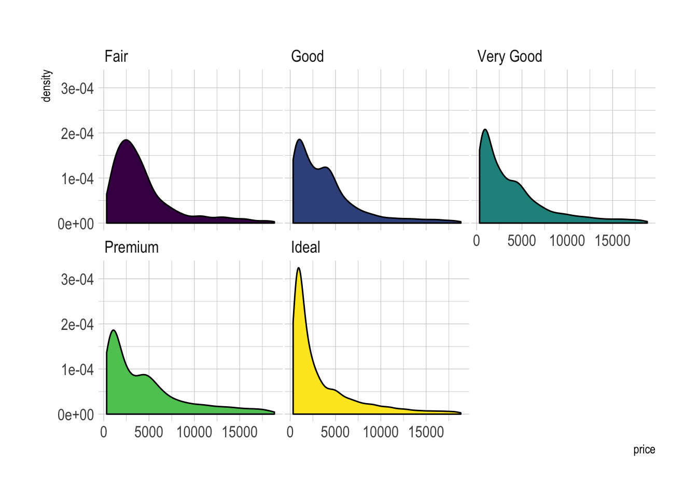
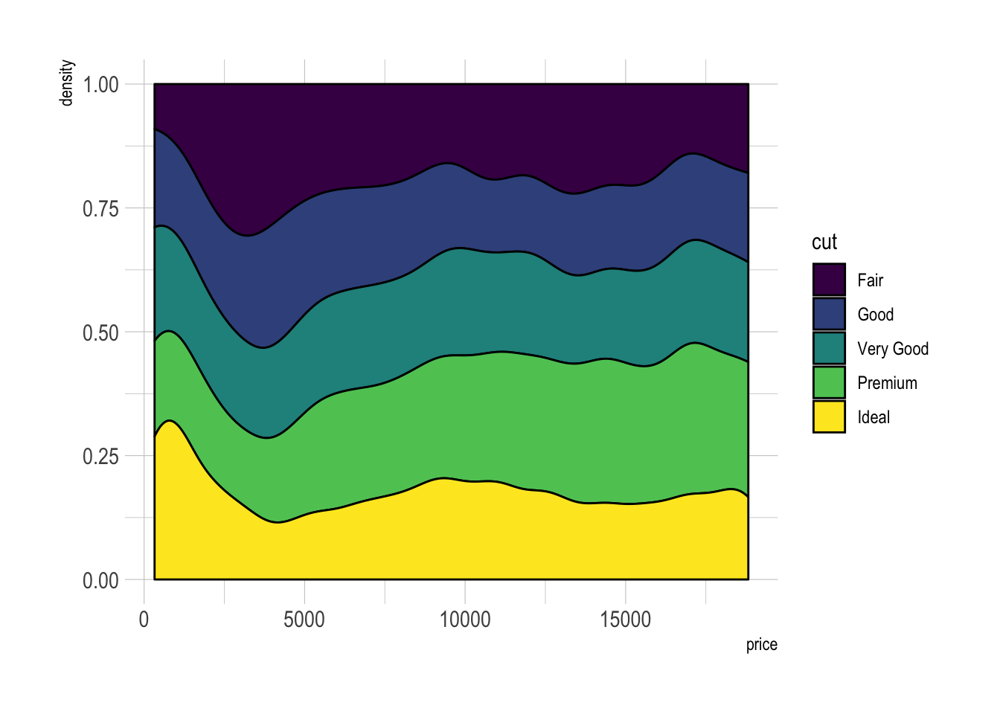

Related chart types

Violin

Density

Histogram

Boxplot

Ridgeline
A density plot is a representation of the distribution of a numeric variable. Comparing the distribution of several variables with density charts is possible. Here are a few examples with their ggplot2 implementation.
A multi density chart is a density chart where several groups are represented. It allows to compare their distribution. The issue with this kind of chart is that it gets easily cluttered: groups overlap each other and the figure gets unreadable.
An easy workaround is to use transparency. However, it won’t solve the issue completely and is is often better to consider the examples suggested further in this document.
# Libraries
library(ggplot2)
library(hrbrthemes)
library(dplyr)
library(tidyr)
library(viridis)
# The diamonds dataset is natively available with R.
# Without transparency (left)
p1 <- ggplot(data=diamonds, aes(x=price, group=cut, fill=cut)) +
geom_density(adjust=1.5) +
theme_ipsum()
#p1
# With transparency (right)
p2 <- ggplot(data=diamonds, aes(x=price, group=cut, fill=cut)) +
geom_density(adjust=1.5, alpha=.4) +
theme_ipsum()
#p2
Here is an example with
another dataset
where it works much better. Groups have very distinct distribution, it
is easy to spot them even if on the same chart. Note that it is much
better to add group name next to their distribution instead of having a
legend beside the chart.
# Load dataset from github
data <- read.table("https://raw.githubusercontent.com/zonination/perceptions/master/probly.csv", header=TRUE, sep=",")
data <- data %>%
gather(key="text", value="value") %>%
mutate(text = gsub("\\.", " ",text)) %>%
mutate(value = round(as.numeric(value),0))
# A dataframe for annotations
annot <- data.frame(
text = c("Almost No Chance", "About Even", "Probable", "Almost Certainly"),
x = c(5, 53, 65, 79),
y = c(0.15, 0.4, 0.06, 0.1)
)
# Plot
data %>%
filter(text %in% c("Almost No Chance", "About Even", "Probable", "Almost Certainly")) %>%
ggplot( aes(x=value, color=text, fill=text)) +
geom_density(alpha=0.6) +
scale_fill_viridis(discrete=TRUE) +
scale_color_viridis(discrete=TRUE) +
geom_text( data=annot, aes(x=x, y=y, label=text, color=text), hjust=0, size=4.5) +
theme_ipsum() +
theme(
legend.position="none"
) +
ylab("") +
xlab("Assigned Probability (%)")
facet_wrap()Using small multiple is often the best option in my opinion. Distribution of each group gets easy to read, and comparing groups is still possible if they share the same X axis boundaries.
# Using Small multiple
ggplot(data=diamonds, aes(x=price, group=cut, fill=cut)) +
geom_density(adjust=1.5) +
theme_ipsum() +
facet_wrap(~cut) +
theme(
legend.position="none",
panel.spacing = unit(0.1, "lines"),
axis.ticks.x=element_blank()
)
Another solution is to stack the groups. This allows to see what group is the most frequent for a given value, but it makes it hard to understand the distribution of a group that is not on the bottom of the chart.
Visit data to viz for a complete explanation on this matter.

Related chart types